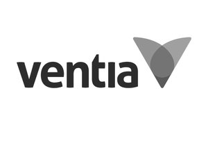
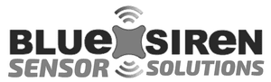
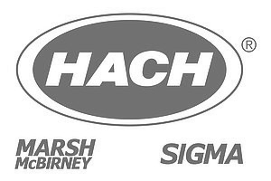
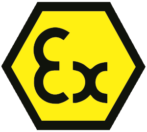
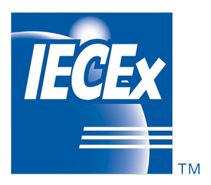

Sewer network
Under every street, flow and depth are measured at the manhole and sent in over 4G.
Sewer networks
Sewer Flow MonitoringInflow & Infiltration StudiesData as a Service (DaaS)Model CalibrationThermal Infiltration SurveysBlockage & Overflow AlarmsWorks VerificationWater & environment
Water Quality MonitoringSampling & Sampler HireTrade Waste MonitoringClosed Channel FlowRainfall MonitoringReal-time data & analysis
Real-Time MonitoringPump Station MonitoringSCADA & TelemetryData Analysis & ReportingNetwork Assessment & ReviewField services & support
Auditing & CalibrationEquipment RentalFacility ManagementTraining & Support View allWater · Wastewater · Trade waste · Environment
Environmental Data Services has been a trusted leader in advanced monitoring solutions and specialised services since 1991, delivering high quality instrumentation, technical support and field proven solutions across Australia.
Move your pointer through the flow
One city, every measurement
Hover over a district to lift it out of the city and see the services and products EDS brings to it.
Under every street, flow and depth are measured at the manhole and sent in over 4G.
Wet well levels, pump runs and alarms, watched around the clock.
Flow, quality and sampling through every stage of treatment.
Discharge measured and sampled, so trade waste stays compliant.
Water quality, rainfall and temperature, from baseline to compliance.
Buildings and structures scored 24/7 and managed as one service.
Every reading arrives in one place: EDS FlowSense.
Trusted by government, utilities, councils and industry



Services
Temporary and permanent flow monitoring for councils and water authorities, installed by trained crews Australia wide.
Learn moreFind where stormwater and groundwater enter the sewer, and how much, so investment goes where it counts.
Learn moreA complete open channel sewer monitoring solution with no capital outlay, managed end to end by EDS.
Learn moreMonitoring programs designed to calibrate and enhance hydraulic and sewer network models.
Learn moreCompliance monitoring, real-time data and reporting for industrial discharge.
Learn moreRugged wireless monitoring equipment that integrates with the SCADA systems you already run.
Learn moreIn-depth network analysis and reporting on the performance and condition of water and wastewater networks.
Learn moreIn situ audits and calibration of your monitoring equipment by experienced service technicians.
Learn moreFlow lab
Send a storm through a model catchment and watch the hydrograph respond. The gap between measured flow and the dry weather pattern is inflow and infiltration: water that should never have reached the sewer.
An illustrative model of a 600 mm sewer, not live data. Flow is wetted area multiplied by velocity, the way an area-velocity flow meter measures it.
EDS FlowSense
The platform behind our monitoring: flow analytics and engineering insight for every site EDS measures.
Products

Data loggers, sensors and the Pump Station Manager, manufactured by EDS.
View range
Ultrasonic flow, level and water quality instruments engineered for sewer networks.
View range
Rugged mobile and stationary samplers from the world's leading maker of certified sampling systems.
View range
Loggers and sensors from Hach, including the Sigma and Marsh-McBirney legacy lines.
View range
Temperature loggers, thermistor strings and cloud data, proven in the extremes of Alaska.
View range
Portable, permanent and refrigerated composite samplers for wastewater and process liquids.
View range
Real-time nitrate and nitrite measurement with laboratory accuracy in the field.
View range
Ultrasonic water meters and flow meters to ISO and AWWA standards.
View rangeIndustries
EDS provides the capability, experience and service that clients rely on for critical infrastructure and operational monitoring.
Councils, utilities and water authorities.
Catchments, rivers and compliance monitoring.
Mining, manufacturing, power and processing.
Federal, state and local, including Defence.


Certified for hazardous areas. EDS supplies intrinsically safe equipment certified under ATEX and IECEx, including Zone 0 instruments for sewer environments.
Since 1991
Graham and Cynthia Harper establish EDS in Queensland, alongside the release of its flagship product, the Pump Station Manager (PSM).
Graham develops the EDS data logger for the Bureau of Meteorology, still in use today, then moves into flow with the Marsh-McBirney range, now Hach.
EDS begins servicing and monitoring the Australian Defence facility, under a contract still in place.
EDS has grown to be Australia's largest supplier of equipment for the water and wastewater industry, and was awarded the largest sewer monitoring project in Australia in recent years.
EDS helped us design and implement a user friendly and rugged sewer monitoring program that was completely remote. The level of service and professionalism received by EDS is always leading the industry.Tony Cockrel, DERM
Nationwide
Crews and support across the country. Call 1300 721 683 from anywhere in Australia.
White papers
How modern sewer flow monitoring programs deliver far more than I/I insights. Drawing on real projects across Australia, it shows accurate flow data helping utilities detect blockages, verify maintenance, identify cross connections, optimise pump operations and target investment.
Read the paperExcess stormwater and groundwater entering sewer systems remains one of the most costly and complex challenges for councils and utilities. With asset pressures rising and budgets under strain, targeting I&I is more critical than ever.
Read the paperHow combining thermistor strings with open channel sewer flow meters gives precise detection of infiltration, with continuous real-time monitoring, non-intrusive installation and significant cost savings.
Read the paperTell us about your network, site or project. A real person from our team will come back to you.